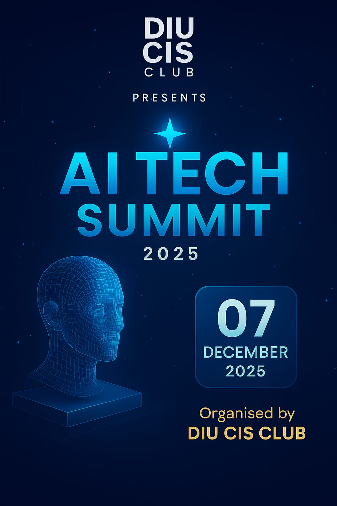

The CIS Club of Daffodil International University is a community for tech-driven students who want to explore programming, AI, and modern innovation.

Date: 07 December 2025
Join the biggest technology event of the semester!
View DetailsJoin CIS Club today and be a part of the future of technology.
Join NowThe Programming Wing of the DIU CIS Club empowers students to master coding through hands-on workshops, competitive contests, real-world projects, and collaborative learning experiences..
The Cultural Wing celebrates creativity, diversity, and tradition through vibrant cultural events, performances, and festivals that bring the campus community together.
The Sports Wing builds teamwork and sportsmanship by hosting exciting indoor and outdoor games, tournaments, and fitness-driven activities for students.
The CIS Club at DIU is a dynamic student community that promotes learning, innovation, and leadership. Through programming workshops, tech events, cultural activities, and sports, we help students develop skills, build confidence, and explore their passions. Together, we create a supportive environment that inspires creativity, collaboration, and personal growth.